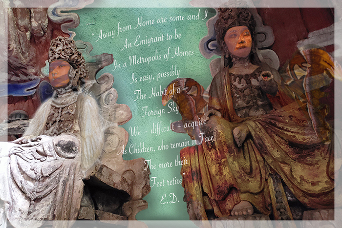

Here, I wanted to convey the impasse of undergoing the state of transformation from a pupa (immobile, immature) to moth (can fly but here unable or unwilling). I merged images of my face with the Bodhisattvas' statues at the "Cave of Full Enlightenment" in China. These are Buddhist enlightened beings who have put off entering paradise in order to illuminate others. The poem from Emily Dickinson, and other iconography add to the precariousness sense of home of the post-modern world.
